Zwiedzone miejsca
- Rynek
- Planetarium
- Zamek Krzyżacki
- Centrum Nowoczesności Młyn Wiedzy
Czas wycieczki: 2 dni
Skład osobowy: 2 dorosłych
Weekendowy wyjazd do Torunia był spontanicznym pomysłem. Chcieliśmy zobaczyć miasto Kopernika, spróbować lokalnych pierników ale też piernikowego piwa. Pojechaliśmy samochodem i podróż zajęła nam około 5 godzin. Dojechalibyśmy szybciej, ale nowa droga prowadząca do Torunia była na tyle niedawno otwarta, że nie było jej jeszcze w nawigacji. Tak czy inaczej w drodze powrotnej już z niej skorzystaliśmy.
Zwiedzanie
Dzień pierwszy
Pierwszy dzień w Toruniu spędziliśmy przede wszystkim na zwiedzaniu Starego Miasta. Spacerowaliśmy po rynku otoczonym zabytkowymi kamienicami, a następnie weszliśmy na wieżę Ratusza Staromiejskiego. Z góry mogliśmy zobaczyć panoramę miasta, dachy toruńskiej starówki oraz Wisłę. Tego dnia trafiliśmy również na koncert odbywający się bezpośrednio na rynku. Po koncercie zatrzymaliśmy się na piernikowe piwo, które idealnie pasowało do miasta kojarzącego się przede wszystkim z piernikami. Wieczorem wybraliśmy się jeszcze na spacer wzdłuż zewnętrznej strony dawnych murów miejskich.
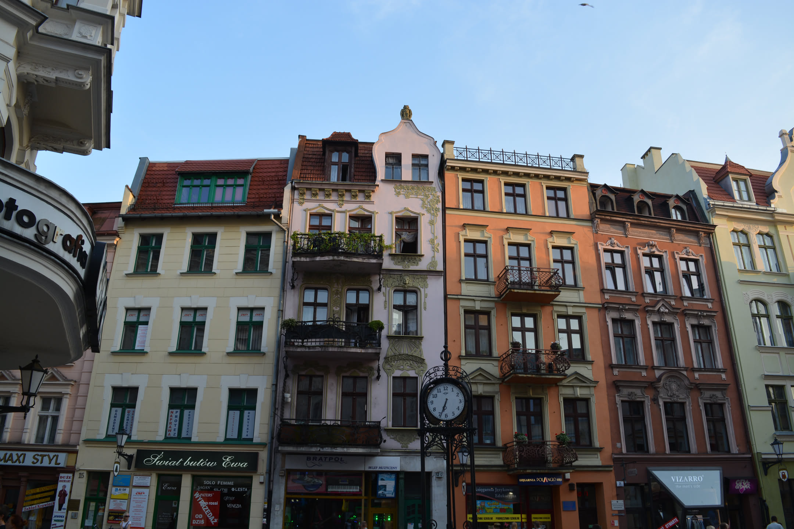
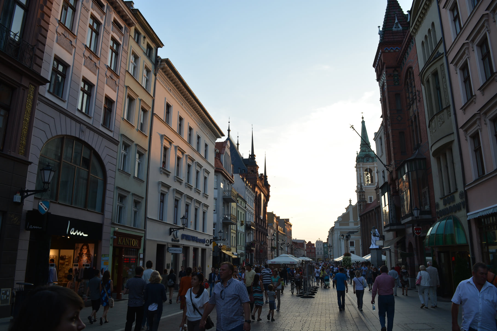
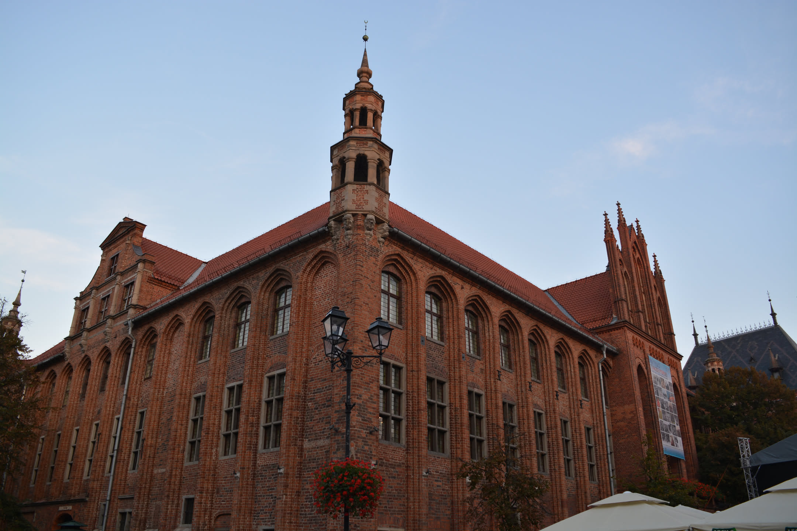
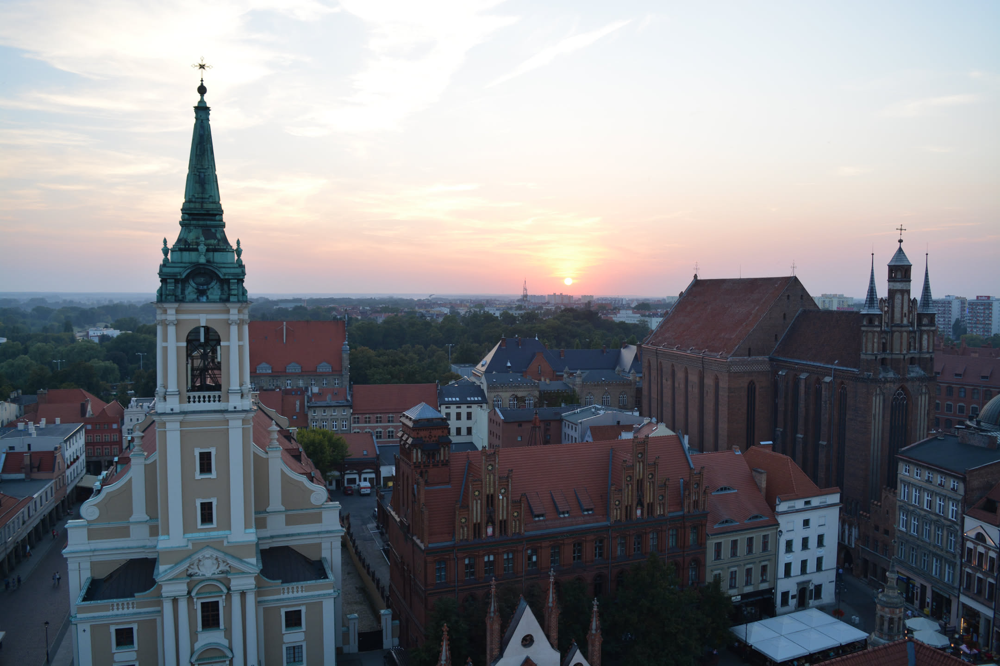
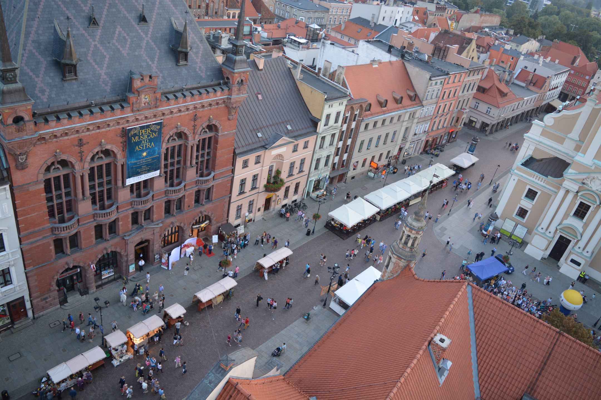
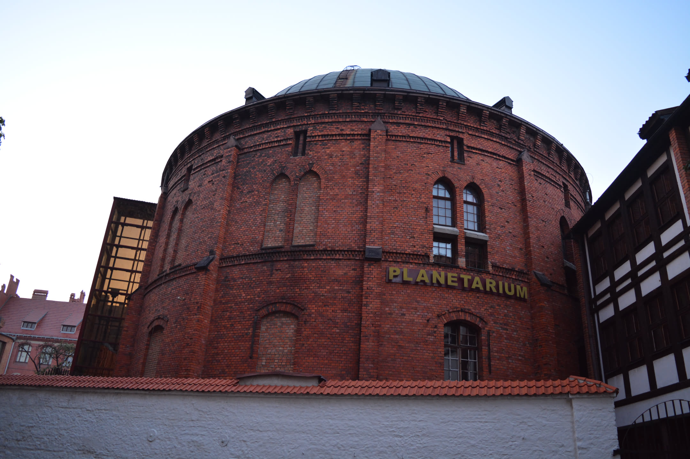
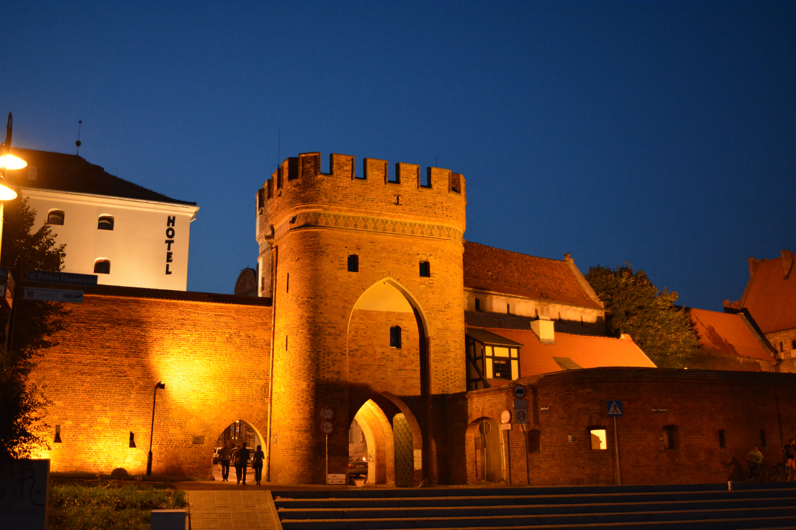
Zwiedzanie
Dzień drugi
Drugi dzień rozpoczęliśmy od zwiedzania ruin zamku krzyżackiego. Z dawnej warowni nie pozostało już zbyt wiele, ale zachowane fragmenty murów, podziemia i dziedziniec pozwalają wyobrazić sobie, jak wyglądało to miejsce w czasach swojej świetności. Później wróciliśmy na toruńską starówkę. Odwiedziliśmy ponownie Mikołaja Kopernika. To właśnie w Toruniu urodził się słynny astronom. Kilka kolejnych godzin spędziliśmy w centrum nauki, gdzie mogliśmy samodzielnie przeprowadzać eksperymenty i poznawać różne zjawiska poprzez zabawę. Na zakończenie wybraliśmy się jeszcze do planetarium. No a potem wróciliśmy do domu/
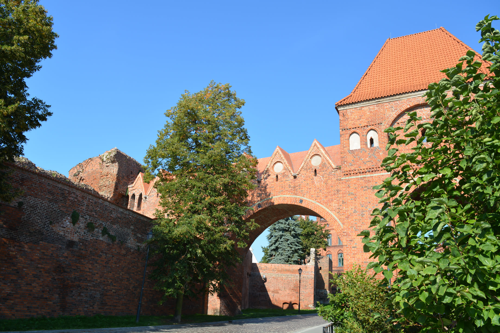
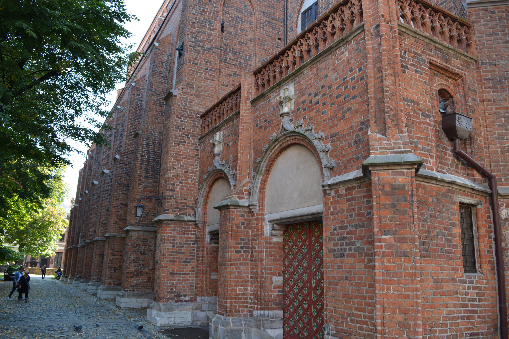
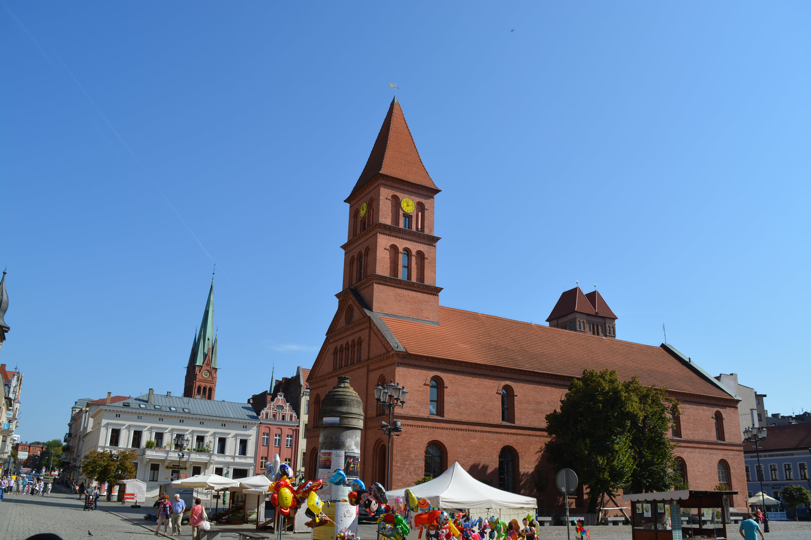
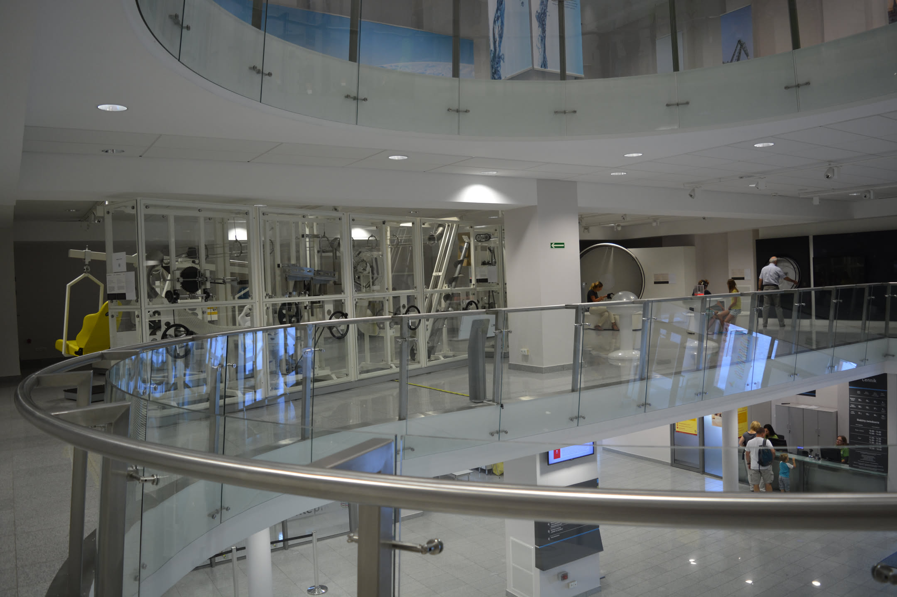